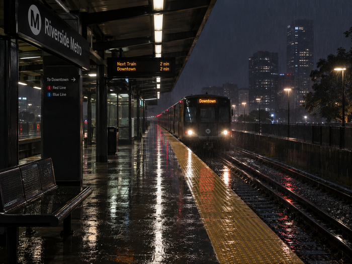

Recent Posts
In a Station
of the Metro
The apparition of these faces in the crowd;
Petals on a wet, black bough.

Between arrivalsRecent Posts
The apparition of these faces in the crowd;
Petals on a wet, black bough.

Between arrivals